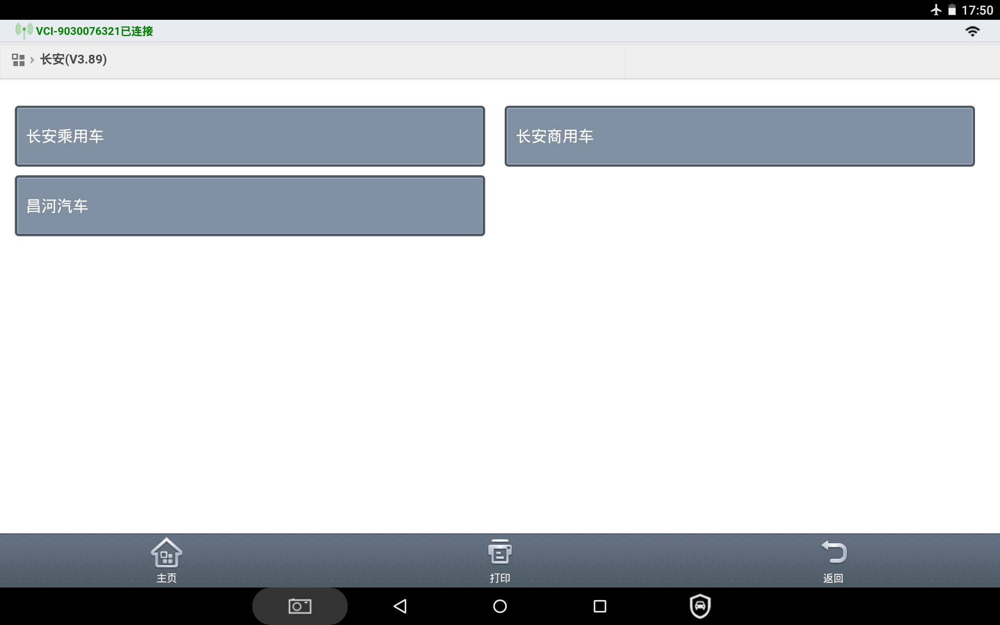
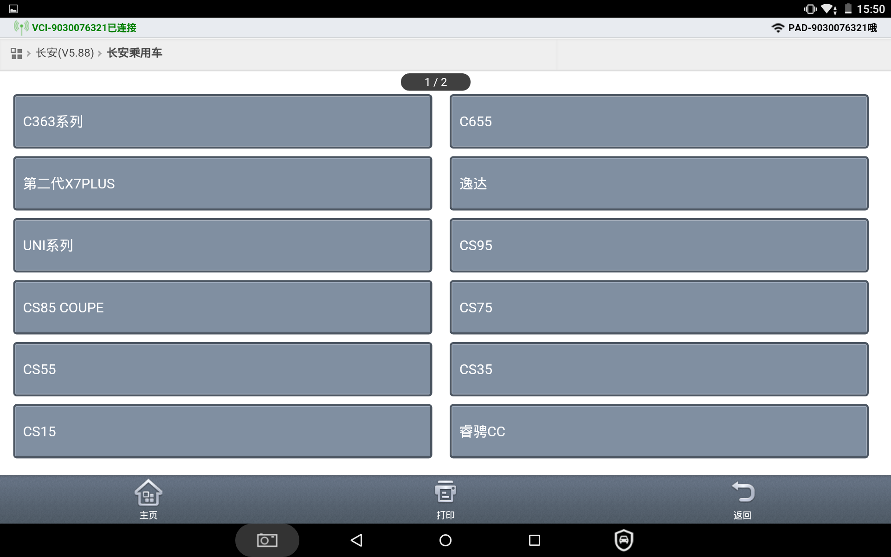
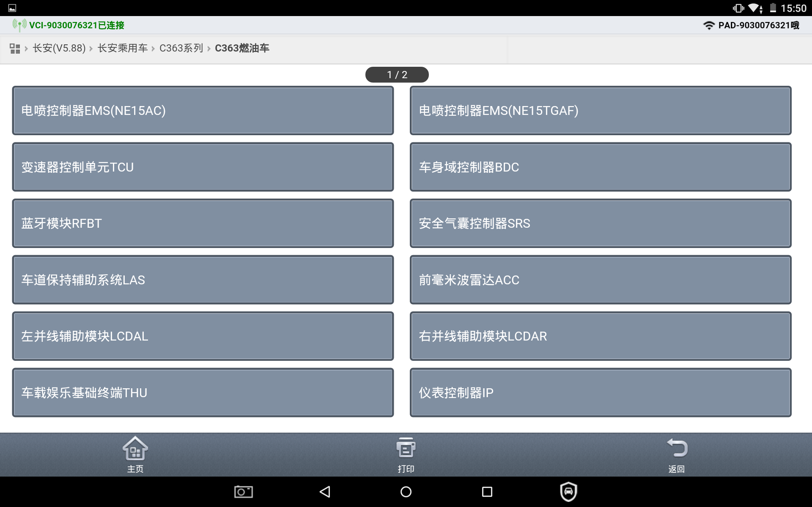
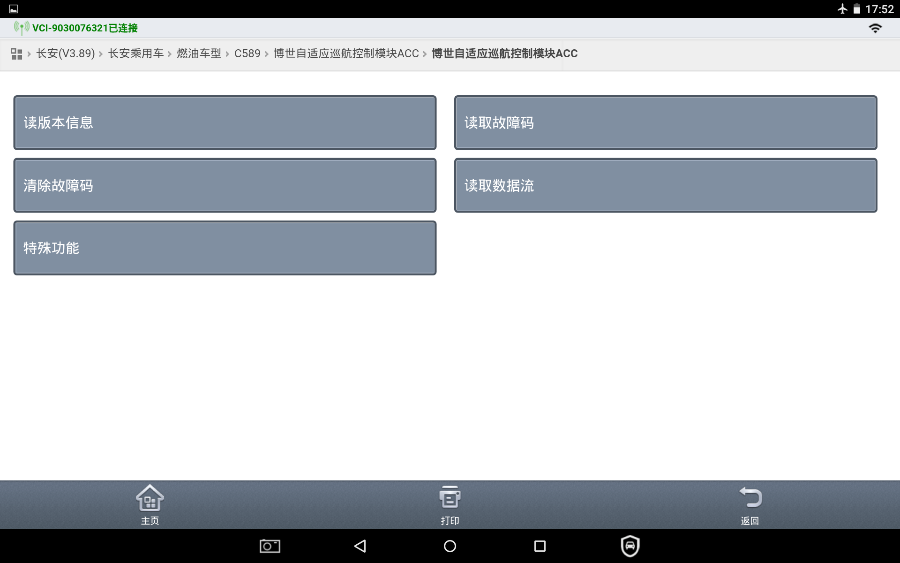
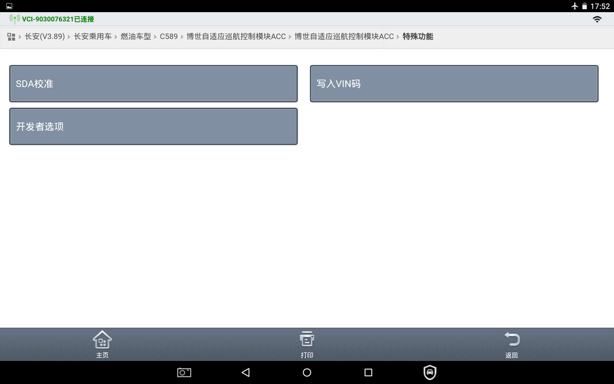
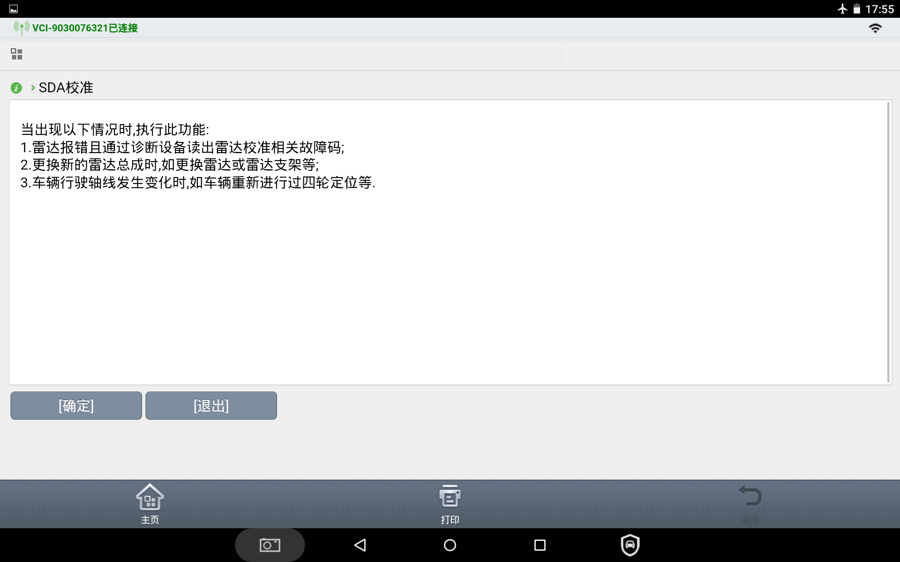
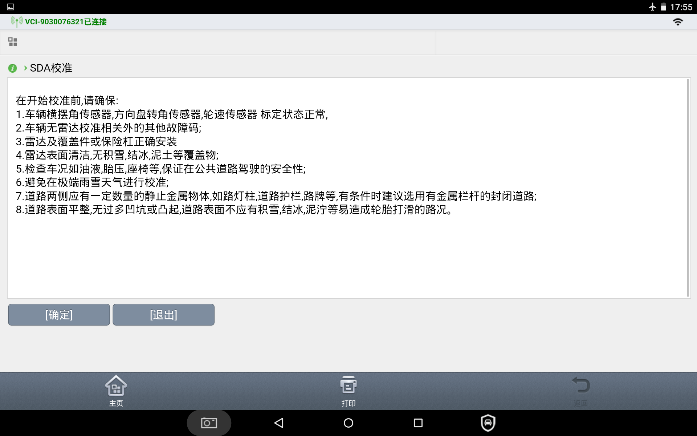
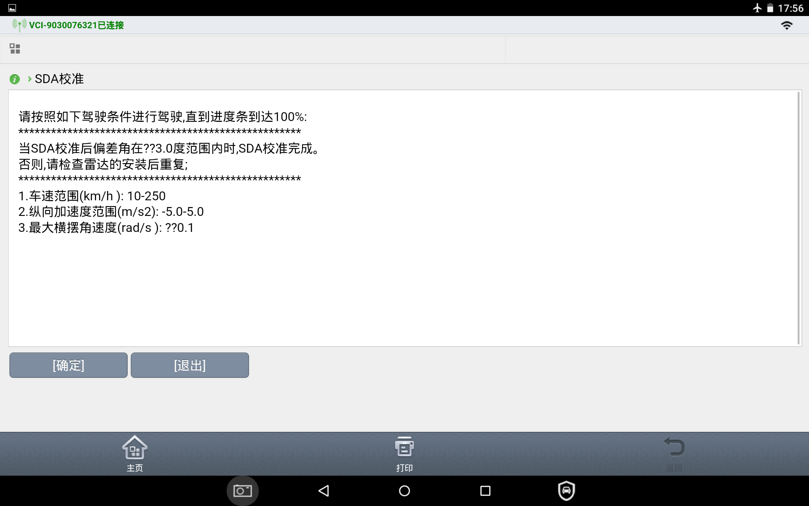
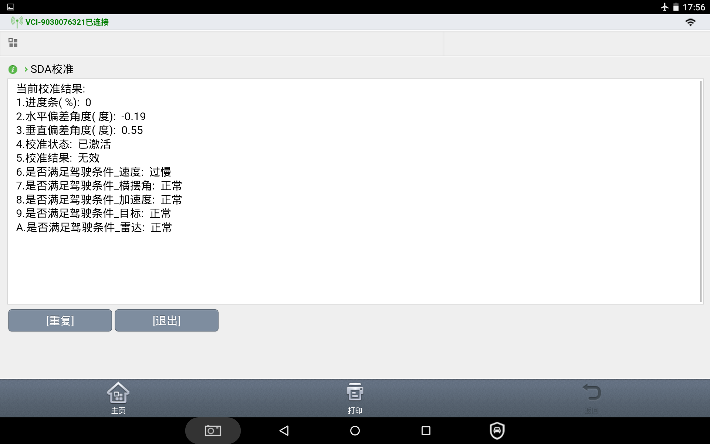

Калибровка выполняется с помощью диагностического прибора.
步骤一：
Подключить диагностический прибор:
1) Войти в раздел «Легковые автомобили Changan»

2) Выбрать модель автомобиля B216

3) Войти в контроллер ACC радара миллиметрового диапазона переднего обзора

4) Открыть интерфейс диагностики радара миллиметрового диапазона переднего обзора
Войти в раздел специальных функций и подтвердить.

Войти в калибровку SDA.

Выполнять операции в соответствии с подсказками до появления пункта «Начать калибровку».
1) Диагностический прибор выводит условие калибровки 1, нажать кнопку «Подтвердить» для перехода к следующему шагу

2) Диагностический прибор выводит условие калибровки 2, нажать кнопку «Подтвердить» для перехода к следующему шагу

3) Диагностический прибор выводит условие калибровки 3, нажать кнопку «Подтвердить» для перехода к следующему шагу

4) Когда полоса выполнения достигнет 100%, а результатом калибровки будет статус «Завершено», калибровка считается выполненной

步骤二：
После входа в интерфейс чтения результатов калибровки начать движение автомобиля, контролируя индикатор выполнения.
Требования к вождению:
Скорость автомобиля: 10-120 km/h (скорость должна быть выше 10 km/h)
纵向加速度：-5-5m/s2（速度控制平稳）
横摆角速度：-0.1-0.1rad/s2（转向控制平稳）
Радиус кривизны: 0.001 m (движение преимущественно по прямой)
ABS/TCS/EPBi: не активированы
В противном случае будет выдана подсказка о несоответствии условиям.
步骤三：
进度条达到100%时，如果水平、垂直校准偏差角均小于3°，直接确认完成校准；如果校准偏差角大于等于3°，需要拆除保险杠，确认ACC支架是否损坏。若损坏需要更换保险杠或者支架，再重复第一、二步进行标定。
步骤四：
Считать коды неисправностей, проверить, выключен ли заводской режим; если он не выключен, выключить его. Удалить коды неисправностей, перезапустить автомобиль.
步骤五：
После устранения неисправности калибровка завершена.